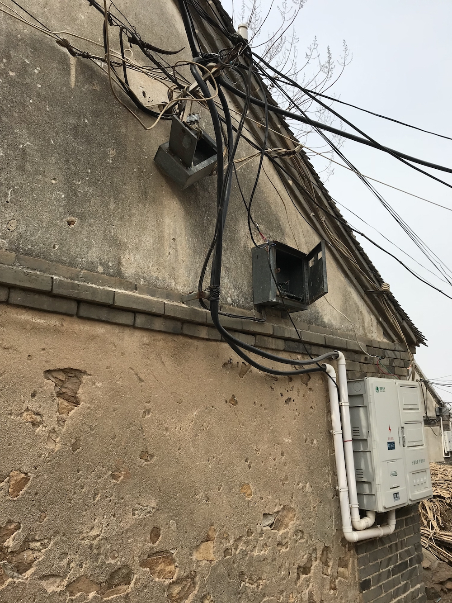

王福强：让升级思维指引行业方向的选择
王福强
升级是一种改进型演化逻辑， 有路径依赖。

这幅图是年初春节时候去亲戚家探亲，在他们村我拍的一张照片， 一直放在手机里提醒我一件事儿，什么事儿呢？事物是一直在向更好的方向发展的， 不能一直以固定的思维盯着成本，甚至觉得一定要降成本， 但实际上， 业态的发展从来都是向好发展， 那也意味着整个生态都是水涨船高， 这就跟股票市场一样， 即使再有回调和大跌，但拉长了看，整体上一定是向上走的。
一个小小的电表箱，反映出的是电力行业这些年基础设施上的向好发展，从模拟/粗糙， 到数字化/精细标准化，今天， 非数字化智能化设备已经无法融入整个生态发挥其该有的基础职能了。
升级发展， 这是任何行业发展的必然趋势， 不要用昨天的思维和眼光看待事物的发展，否则将让自己落后于时代而不自知，进而遭受淘汰的命运，就跟图中最上面那个电表箱一样，“收尸”都没人管 ；）
同样是电力行业，现在的电力设备车间也在寻求升级， 在智能制造的大趋势下， 首先寻求智能车间的原型打样， 然后再批量复制成功模式， 这是现在很多传统行业正在做的事情，互联网企业或者原来单纯互联网行业的从业人员现在选择2B行业，帮助传统企业进行互联网改造， 本质上也是看到了传统行业升级的诉求和趋势。
AI和大数据其实也是一种升级的业态诉求才会让大家趋之若鹜。大数据是数据量和数据资源的爆炸式增长导致的业态升级， 而AI本质上则是计算能力的升级，但他们的组合， 则是过去信息化诉求的业态升级。
当我们在讲城市大脑，大中台向小前台赋能的时候， 其实都是“汤”的升级， 而“药”却一直没有换，因为所有这些升级其实自始至终都是一个组织在打造自己的核心竞争力，信息化能力。 不要信什么凯利公式，财富共识， 其实就tmd一句话， 谁最快拿到最新的有价值信息，谁就永远跑在最前面。所以，各个金融集团从电报升级到电话，从电话升级到互联网，从互联网升级到自建卫星和微波塔，回头来看也就了然了。时至今日的AI+BigData，难道不也是比拼谁能更快更有效地挖掘数据价值并加以利用吗？
城市大脑其实也是升级思维的产物，当年的各种XX指挥系统加以打通和统筹，配合新的数据源和中台系统建设，XYZ大脑都不是问题。
其实有前瞻性的企业从来就没有放松中台信息总控系统的建设，甚至于把信息总控系统或者说信息大脑做成了了企业的核心竞争力以及核心价值资产。
- 沃尔玛能够将四通发达的高速公路当做库房，没有集中的信息系统支持， 怎么可能做到这么精细化的物流调度？
- 7-eleven那？ 不也是依托他们总公司的信息化系统支撑才能实现货物物流的灵活高效调度吗？
- 还有黑猫宅急便…
国内的阿里巴巴更是典型，外人只崇拜阿里的组织能力， 希望找阿里的HR来帮助自己打造类似的“阿里铁军”，却不知道， 阿里的HR一旦离职，其实他们能发挥的作用也会大打折扣， 没有了内生的信息化平台系统的支撑，很多事情做起来就会抓襟见肘，因为系统不单单只是提供日常工作的支持，更多也是组织工作经验长年累月的沉淀产物。对于销售人员也是同样的道理，一家没有信息化系统支撑的公司， 往往很难形成正向的持续迭代， 因为销售人员的经验和成果没有能够沉淀下来作为下一轮升级的基础物料。
所以说， XYZ大脑也只是信息化系统的升级，当MIS和中台听起来不够性感的时候， 换个“X大脑”也是升级的必然吧！
如果说AI是当下计算力的升级，那么，下一代计算力层面的升级又会在哪里呢？ Quantum？
那么大数据的升级方向又在哪里呢？IoT？
只要沿着行业发展的依赖路径以升级思维去思考， 我想大家一定会找到更加Promising的启示~
「为AI疯狂」星球上，扶墙老师正在和朋友们讨论有趣的AI话题，你要不要⼀起来呀？^-^
这里
- 不但有及时新鲜的AI资讯和深度探讨
- 还分享AI工具、产品方法和商业机会
- 更有体系化精品付费内容等着你，加入星球(https://t.zsxq.com/0dI3ZA0sL) 即可免费领取。(加入之后一定记得看置顶消息呀！)

开天窗，拉认知，订阅「福报」，即刻拥有自己的全模态人工智能。